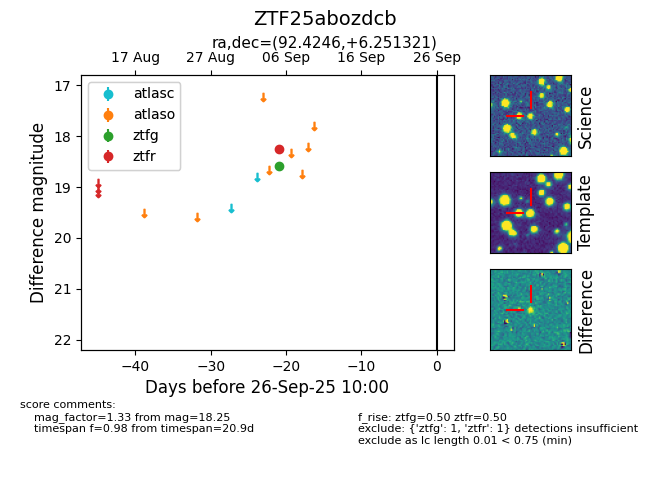

FINK: ZTF25abozdcb
Lasair: ZTF25abozdcb
ALeRCE: ZTF25abozdcb
ZTF25abozdcb (ztf,fink)
equatorial (ra, dec) = (92.4246,+6.25132)
galactic (l, b) = (202.5557,-6.34892)

last ztfg=18.59, ztfr=18.25
1 ztfg, 1 ztfr detections